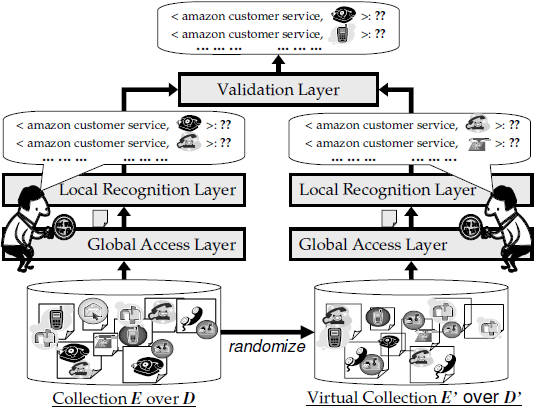

VLDB 2007 - EntityRank
Table of Contents
1 Info.
Tao Cheng, Xifeng Yan, Kevin Chen-Chuan Chang: EntityRank: Searching Entities Directly and Holistically. VLDB 2007: 387-398
2 Introduction
This paper:
- covers entity search problem,
- formulates the framework and
- focus on ranking entities, particularly — combining global aggregation, local analysis and result verification
Contribution:
- formulate the characteristics and requirements of entity search
- propose Impression Model and develop EntityRank scheme for entity ranking
- evaluate the prototype on 2TB Web corpus
3 Challenge
Entity search is
- contextual (matching by surrounding context),
- holistic (across multiple occurance over different pages),
- uncertain,
- associative (tell true association from accidental) and
- discriminative (emphasize popular source pages).
Entity ranking is the centric issue.
4 Problem elaborationle Queries
- (amazon customer service #phone)
- ow(sigmod 2006 #pdf_ file #ppt_ file)
4.1 Framework
- Given
- A collection of entities \(E=\{E_1,E_2,\cdots, E_N\}\) — tagged Web corpus
- Input
- A query \(\beta -\alpha(K_1,K_2,\cdots, K_l,E_1,E_2,\cdots,E_m)\), composed of
- a sequence of keywords \(K_i\) and entities \(E_j\)
- the matching pattern \(\alpha\) e.g. \(\mathtt{ow}\) order-window
- the score measure \(\beta\) for the ranks of the matching instances
- Output
- A list of tuples ranked by matching scores
The duplicated parts with CIDR2007EntitySearchEngine are omitted.
4.2 Requirements for Entity Ranking
- R-Contextual
- pattern — order or bias towards specific sequence pattern, e.g. Amazon 1-800-201-7575 eBay
- proximity — the closer the keywords and the entity instances, the higher the probability
- R-Holistic — aggregate all the occurances for association probability estimation
- R-Uncertainty — extraction confidence probability must be captured
- R-Associative — purify the association
- R-Discriminative — popular pages should contribute more
5 Impression Model - conceptual design
Ideally visit each documents and collect all the evidence, store all the judgement (impression) and stop when sufficient impression is acquired.
- access layer
at time \(\tau\), the observer accesses a document \(d^\tau\) from corpus \(D\), until statistical mean of the impressions will converge (impression stablizes)
- recognition layer
assess if any potential tuple \(t\) occurs with association probability \(p(q(t)|d^\tau)\), where \(q(t)\) denotes a query tuple matching formed by tuple \(t\)
Thus the final score is \(Score(q(t)) = p(q(t)|D)\). (sufficient trial + sum = the whole corpus D)
Naive materialization: equally view every document + use co-occurance frequency of entities and terms as query score
\(\Longrightarrow\) only meets R-Holistic
No discrimination, not aware of uncertainty and conceptual patterns and lack validation layer.
6 EntityRank - concrete design
Add a vitual observer operates samely over a randomized D
Three layers: access layer, recognition layer and newly-added validation layer

Figure 1: The complete framework of the impression model
- access layer
calculate p(d) adopting PageRank and aggregate for a tuple \(t\) over all the pages \(d_i\) it occurs, with each weighted by \(p(d_i)\)
Discrimination can also be captured in this layer
- recognition layer
obtain the observed probability \(p_o\) taking the maximum probability among all the object occurance (different entity/keywords combination) as \(p(q(t)|d)\)
then two consideration are involved:
- Extraction uncertainty — generated during entity extraction over the corpus and recorded in \(e_i.conf\)
Association context — how \(t\) matches \(q\) in the context of \(d\)? pcontext
pcontext is the product of booean pattern constraint \(\alpha_B\) (fit or not, 1 or 0), and proximity function \(\alpha_P\) with a proposed span proximity model in the system
span proximity model: define span as the shortest window that covers the entire entity occurance, whose length is denoted as \(s\), and a object occurance \(\gamma\) \[\alpha_P(\gamma) = p(\gamma |s) = p(s|\gamma)\] where we assume the prior probabilities \(p(\gamma)\) and \(p(s)\) are all the same
patterns and span proximity model are some reasonable implementations, more sophisticated ones can also be adopted. (discriminative model – [11])
- validation layer
validate with the null hypothesis (the same operation on a randomized D) generating the randomized probability \(p_r\)
randomize the dataset while preserving \(p(e_i\in d), p(k_i \in d), e_i.conf\)
After randomization, conditional probabilities are actually independent. Given different span values are independent, for contextual probability, the average value is used.
Simplefied G-test, given \(p_o,p_r << 1\). The higher the score, the more likely they are truly associated.
$Score(q(t)) ∝ po⋅ log\frac{p_o}{p_r}$$
- implementation sketch
Indexing: standard inverted index, all occurance of each entity type is stored in an ordered list.
Search: \(p_r\) and PR can be done off-line, scalable on ordered-list operations
7 System Prototype
7.1 Implementation
engine — Lemur IR Toolkit and adapted to entity indexing corpus — Stanford WebBase Project entity extraction — rule-driven (regular patterns e.g. #phone, #email) + dictionary-driven (enumerated keywords e.g. #university, #professor)
7.2 Qualitative Analysis
Case studies on four senarios
7.3 Quantitative Evaluation
Compare accuracy with five other approaches
query:
- top 30 company names in Fortune 500, 2006 with #phone,
- 88 PC member name of SIGMOD 2007 with #email.
measure — mean reciprocal rank (approx 0.65, outperforming all the other approaches)
relatively efficient both temporally (2.45s) and spacially (<0.1% overall overhead)
Elaborate the effectiveness of global aggregation, local analysis, discriminative and associative factors and holistic analysis, respectively.
8 Related Work
- IE
- QA — may overlap to some extent but different focus
- combining entity and relation for searching tasks